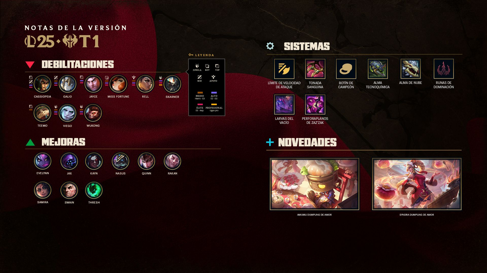

League Of Legends
¿Qué es League Of Legends?
¡Os damos la bienvenida a nuestra primera versión con cambios importantes a campeones de la primera temporada de 2025!
Estamos ajustando la mayoría de nuestros sistemas y, por tanto, siguiendo de cerca el equilibrio de cada elemento a nivel individual. Vamos a bajarles los humos a los tres campeones que más sobresalen en la jungla (Viego, Skarner y Wukong), devolverle una parte importante del poder a la rama de Dominación tras el cambio de runas, dar un empujoncito a los autoataques mediante un aumento del límite de velocidad de ataque general, y a reducir aún más el botín por campeones de los carries del equipo en desventaja. También vamos a hacer un repaso de equilibrio rápido a diferentes monstruos épicos, debilitando a las larvas del Vacío, Atakhan voraz y el Alma de nube y, por otro lado, mejorando el Alma tecnoquímica.
Además, también traemos un montón de cambios a campeones a nivel individual. Tenemos una ronda de actualizaciones del Modo rápido para que los monstruos épicos no supongan tanta presión a los jugadores, además de fomentar que las partidas acaben más rápido, ¡tal y como indica su nombre! Por otro lado, traemos una serie de cambios de equilibrio a los campeones con mejor y peor rendimiento.PLATOS FUERTES DE LA VERSIÓN
Si quieres sabe toda la información sobre esta actualizacion de la versión haz click aquí.